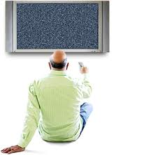

Ремонт телевизоров в Харькове на дому от 50 грн.
LED, LCD, ЖК, SMART и плазма.
Выезд мастера на дом в тот же день.
В 90% случаев неисправность устраняется прямо на месте в течении часа
Ремонт LED подсветки телевизоров
На Ваш звонок ответит не диспетчер со списком дежурных вопросов/ответов, а телемастер, который и приедет к Вам на ремонт телевизора.
Вам не придётся никуда везти вашу технику.
Мастер выполнит ремонт телевизора на дому у заказчика в удобное для Вас время.
Мастер выезжает на ремонт телевизоров во все районы Харькова без выходных:.
Салтовка, Алексеевка, Новые Дома, ХТЗ, Холодная Гора, Одесская, Бавария и др.
На все выполненные ремонты выдаётся гарантия.
Любой ремонт производится только после согласования цены ремонта с заказчиком.
Со стороны заказчика процесс ремонта выглядит так:
1. Вы звоните телемастеру и договариваетесь о времени ремонта .
2. В назначенное время приезжает мастер, производит диагностику поломки, определяет и сразу же озвучивает окончательную стоимость и сроки ремонта.
3. Вы решаете ремонтировать или нет.
4. Если Вы решаете ремонтировать - то мастер производит ремонт - Вы расчитываетесь - мастер уезжает ...
а Вы ещё долго наслаждаетесь замечательной работой отремонтированного устройства ...
По вашему желанию мастер производящий ремонт телевизора в Харькове объяснит и покажет, что именно сломалось и почему это могло произойти.
Есть несколько основных причин, по которым следует заказать ремонт ТВ здесь:
1.На телефонный звонок всегда ответит опытный телемастер. Т.е. все вопросы о ремонте телевизора Вы сможете сразу задать специалисту и договориться о визите мастера на дом в удобное время.
2. Цены на ремонт невысоки.
3. Поскольку уже много лет мы специализируемся на ремонте TV на дому, у всех мастеров есть все необходимое оборудование для диагностики и ремонта неполадок на месте. Благодаря этому, ремонт телевизора происходит в кратчайшие сроки и экономит Ваше время.
4. Все наши мастера имеют высшее техническое образование и многолетний опыт ремонта импортных телевизоров.
Вы можете заказать ремонт импортных телевизоров таких марок: Samsung, LG, Philips, Sony, Ergo, Dex и BBK.
Уважаемые заказчики, обращаем Ваше внимание, что наши мастера выполняют ремонт телевизоров только в Харькове на дому.
Телемастера не выезжают за черту города .